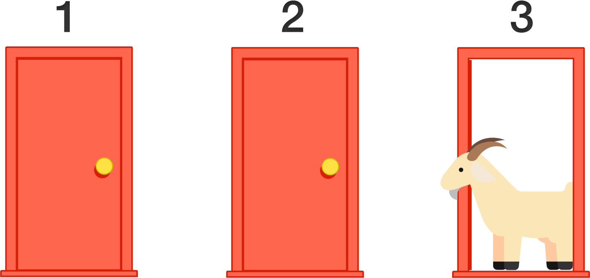
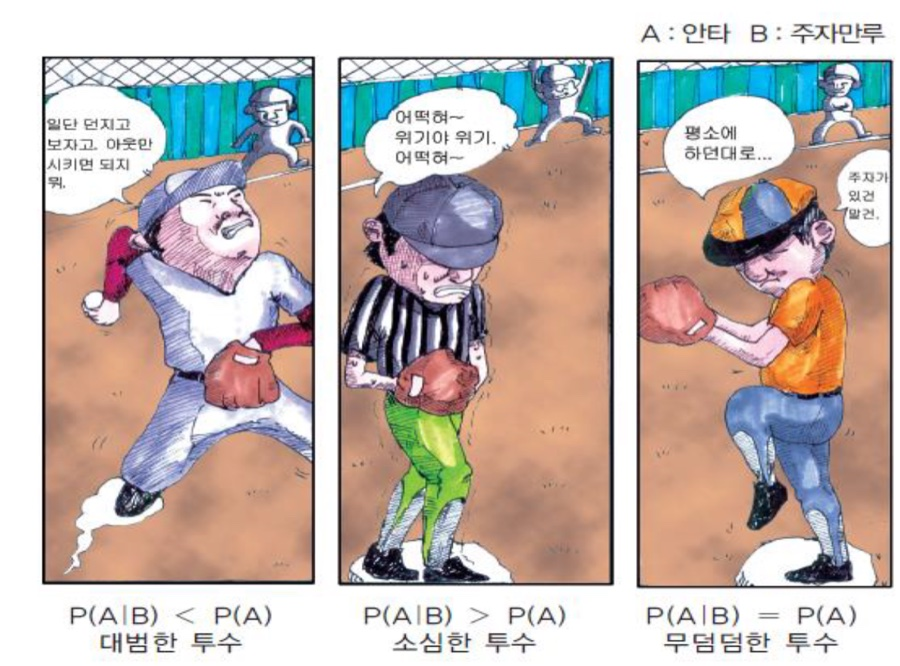
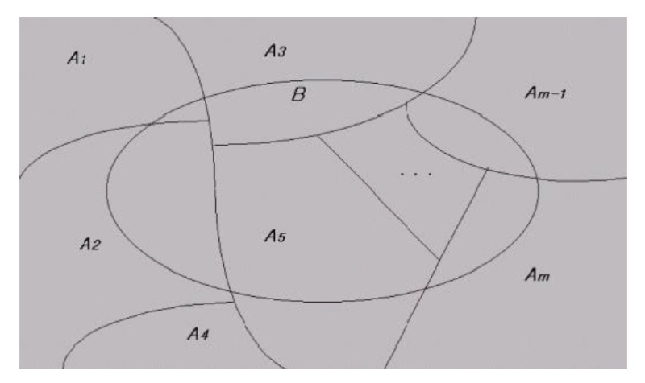

9강. 확률이론 (2)
지난 강의 요약
- 자료의 요약 통계량이 동일 모집단의 다른 표본에서도 유사할지를 판단하기 위해 확률개념이 필요하다.
- 확률이란 어떤 사건이 일어날 가능성을 의미한다.
- 확률은 어떤 사건 발생 가능성에 대한 주관적 확신의 정도나, 한 시행을 동일한 조건에서 독립적으로 반복했을 때 전체 시행횟수에서 그 사건이 일어난 횟수의 비율로 나타낸다.
- 확률은 0~1 사이의 값을 가지며, 각 사건의 확률은 시행을 무한 반복하거나 사건의 특성을 보고 개념적으로 계산할 수 있다.
- 사건이란 특정 시행이나 실험에서 관찰가능한 결과를 의미하며, 표본공간은 발생 가능한 모든 사건의 집합을 의미한다.
- 표본공간에서 발생하는 각 사건들에 대응한 실수 값을 확률변수라 하며, 각 확률변수가 나타날 가능성에 대한 분포가 바로 확률분포이다.
- 이산확률변수에 대한 확률분포함수를 확률질량함수, 연속확률변수에 대한 확률분포함수를 확률밀도함수라 한다.
몬티홀 문제
Q) 세 개의 문 중 하나에는 자동차가, 나머지 두 개에는 염소가 있다.
당신이 문 하나를 선택하면 사회자가 나머지 두 개의 문 중에 염소가 있는 문 하나를 연다.
그리고 열리지 않은 문을 두고 다시 한번 선택할 수 있는 기회를 준다.
선택을 바꿀 것인가, 바꾸지 않을 것인가?

https://youtu.be/AXB6r-hjsig
집합을 이용한 확률의 이해
벤 다이어그램 · 상호배반 · 덧셈법칙 · 조건부확률과 곱셈법칙 · 베이즈 정리
벤 다이어그램 (Venn diagram)
전체 집합과 여러 사건 집합 간의 관계를 하나의 직사각형과 그 안의 원으로 나타낸 것
벤 다이어그램의 예시
상호배반 (mutually exclusive) 사건
한 사건이 발생할 때 다른 사건이 일어날 수 없는 경우 두 사건 간의 관계
Q) 사건 A의 상호배반 사건은? A의 여사건
- 동전의 앞면과 뒷면
- 주사위의 홀수가 나오는 사건과 6이 나오는 사건
상호배반이 아닌 경우
상호 배반(mutually exclusive) 사건: 한 사건이 발생할 때 다른 사건이 일어날 수 없는 경우 두 사건 간의 관계
상호배반
주사위의 홀수가 나오는 사건과 6이 나오는 사건
상호배반이 아님
주사위의 홀수가 나오는 사건과 3의 배수가 나오는 사건
확률의 덧셈법칙
$$P(A \cup B) = P(A) + P(B) - P(A \cap B)$$
- $P(A), P(B)$:
A가 발생할 확률, B가 발생할 확률
→ 주변확률/비조건부확률 (marginal probability)
- $P(A \cap B)$:
A와 B가 동시에 발생할 확률 (A 그리고 B가 함께 일어날 확률)
→ 결합확률 (joint probability)
- $P(A \cup B)$: A와 B 중 적어도 하나의 사건이 일어날 확률 (A 또는 B가 일어날 확률)
확률의 덧셈법칙
$$P(A \cup B) = P(A) + P(B) - P(A \cap B)$$
둘 중 하나의 사건이 발생할 확률은
두 사건이 각각 발생할 확률의 합과
두 사건이 동시에 발생할 확률의 차
조건부확률 (conditional probability)
한 사건이 발생했다는 조건 하에서 다른 사건이 발생할 확률
Q) 다음의 상자에서 두 장의 카드를 비복원추출로 뽑을 때
→ 첫 번째 카드가 2라는 조건 하에서 두번째 카드가 4일 확률은?
조건부확률
P(A|B) = B가 일어났다는 것을 알고 있을 때 A가 일어날 확률
- B가 일어났다는 것을 알았을 때 A가 일어날 확률은
- B가 일어날 확률에서
- B가 일어났을 때 A가 일어날 확률이 차지하는 비중
$$P(A|B) = \frac{P(A \cap B)}{P(B)}$$
확률의 곱셈법칙
$$P(A \cap B) = P(A) \times P(B|A) = P(B) \times P(A|B)$$
- $P(A), P(B)$:
A가 발생할 확률, B가 발생할 확률
→ 주변확률/비조건부확률 (marginal probability)
- $P(A \cap B)$:
A와 B가 동시에 발생할 확률 (A 그리고 B가 함께 일어날 확률)
→ 결합확률 (joint probability)
- $P(A|B)$:
B가 발생했다는 조건 하에서 A가 발생할 확률
→ 조건부확률 (conditional probability)
확률의 곱셈법칙
$$P(A \cap B) = P(A) \times P(B|A) = P(B) \times P(A|B)$$
두 사건이 모두 일어날 확률은
하나의 사건이 일어날 확률과
그 사건이 일어났다는 조건 하에서 다른 하나의 사건이 일어날 조건부확률의 곱
조건부확률과 독립

P(A)인 소심한 투수, P(A|B) = P(A)인 무덤덤한 투수를 그렸다">독립 (independent)과 종속 (dependent) 사건
- 독립 (independent) : 한 사건이 발생할 때 다른 사건이 일어날 확률이 변하지 않는 경우 두 사건 간의 관계
- 종속 (dependent) : 한 사건이 발생할 때 다른 사건이 일어날 확률이 바뀌는 경우 두 사건 간의 관계
두 사건이 독립일 경우
$P(B|A) = P(B),\ P(A|B) = P(A)$
따라서 두 사건이 모두 일어날 확률은
$P(A \cap B) = P(A) \times P(B|A) = P(A) \times P(B)$
→ 복원추출은 매 추출이 독립, 비복원추출은 종속
만약 두 사건이 종속이라면
두 사건의 결합확률을 계산하기 위해서
반드시 두 사건의 조건부확률을 알아야 한다!
상호배반과 독립의 구분
- 상호배반 (mutually exclusive):
한 사건이 발생하면 다른 사건이 발생하지 못하는 경우
→ $P(A \cap B) = 0$인 경우
→ 상호배반인 두 사건은 서로 종속관계 (∵ A가 일어나면 다른 사건의 확률이 0으로 변경되므로)
- 독립 (independent):
한 사건이 발생해도 다른 사건의 (비조건부) 확률이 바뀌지 않는 경우
→ $P(B|A) = P(B)$이고 $P(A|B) = P(A)$ 인 경우
덧셈법칙과 곱셈법칙
- 덧셈법칙:
두 사건 중 적어도 하나의 사건이 일어날 확률과 관련
$$P(A \cup B) = P(A) + P(B) - P(A \cap B)$$
→ 두 사건이 상호배반일 경우 $P(A \cap B) = 0$
- 곱셈법칙:
두 사건이 함께 일어날 확률과 관련
$$P(A \cap B) = P(A) \times P(B|A)$$
→ 두 사건이 독립일 경우 $P(B|A) = P(B)$
조건부확률의 심화
P(A|B) = B가 일어났다는 것을 알고 있을 때 A가 일어날 확률
- B가 일어났다는 것을 알았을 때 A가 일어날 확률은
- B가 일어났을 때 A가 일어날 확률과
B가 일어났을 때 A가 일어나지 않을 확률의 합에서 - B가 일어났을 때 A가 일어날 확률이 차지하는 비중
$$P(A|B) = \frac{P(A \cap B)}{P(B)} = \frac{P(A \cap B)}{P(A \cap B) + P(A^c \cap B)}$$
조건부확률의 심화
B가 일어났다는 것을 알고 있을 때 A가 일어날 확률
$$P(A|B) = \frac{P(A \cap B)}{P(B)} = \frac{P(A \cap B)}{P(A \cap B) + P(A^c \cap B)}$$
$$= \frac{P(B)P(A|B)}{P(B)P(A|B) + P(B)P(A^c|B)}$$
$$= \frac{P(A)P(B|A)}{P(A)P(B|A) + P(A^c)P(B|A^c)}$$
A의 발생에 대한 사전 확률이 있다면?!
확률의 곱셈법칙
(동어반복적 상황)
확률의 곱셈법칙
베이즈 정리 (Bayes’ theorem)
사전에 설정한 (주관적 견해의) 확률을 새롭게 주어진 정보를 활용해서 업데이트 시켜 미지의 세계를 추론하는 것
$$P(A|B) = \frac{P(A)P(B|A)}{P(A)P(B|A) + P(A^c)P(B|A^c)}$$
Q) 사지선다로 낸 회귀분석 문제를 맞췄을 때(B) 알고 풀었을(A) 확률은?
- 회귀분석을 알았다는 사건: A
- 회귀분석 문제를 맞췄다는 사건: B
- 회귀분석을 알 확률: P(A) → 시험을 보기 전에는 모름 → 교수의 주관적 견해로 확률을 매김 → 사전확률 (prior probability)
- 문제를 맞췄다는 것을 알았을 때
회귀분석을 알 확률: P(A|B) → B라는 새로운 정보를 가지고 P(A)를 업데이트한 확률
→ 사후확률 (posterior probability)
$P(A) = 1/2$
$P(B|A) = 1$
$P(A^c) = 1 - P(A) = 1/2$
$P(B|A^c) = 1/4$ (∵ 사지선다)
$P(A|B) = \dfrac{P(A)P(B|A)}{P(A)P(B|A) + P(A^c)P(B|A^c)} = \dfrac{0.5 * 1}{0.5 * 1 + 0.5 * 0.25} = 0.75$
분할 (partition)
상호배반(mutually exclusive)이면서 그 합이 전체를 포괄(collectively exhaustive)하는 사건들의 집합
전체의 분할과 B의 분할
베이즈 정리 (Bayes’ theorem)의 일반화
m개의 사건이 표본공간 S를 분할할 때
즉, 임의의 $A_i \cap A_j = \emptyset\,(i \neq j)$이고 $S = \{A_1 \cup A_2 \cup \cdots \cup A_m\}$ 일 때

B가 발생했다는 정보를 얻었다면
즉, $P(B) > 0$ 이라면
$A_1$이 발생할 확률은
$$P(A_1|B) = \frac{P(A_1)P(B|A_1)}{P(A_1)P(B|A_1) + \cdots + P(A_m)P(B|A_m)}$$
몬티홀 문제
Q) 세 개의 문 중 하나에는 자동차가, 나머지 두 개에는 염소가 있다.
당신이 문 하나를 선택하면 사회자가 나머지 두 개의 문 중에 염소가 있는 문 하나를 연다.
그리고 열리지 않은 문을 두고 다시 한번 선택할 수 있는 기회를 준다.
선택을 바꿀 것인가, 바꾸지 않을 것인가?
→ 사회자가 문을 열었다는 조건 하에서 내가 선택한 문에 자동차가 있을 확률은?
https://youtu.be/Rvz4Cq55990
몬티홀 문제 – 베이즈 정리의 응용
1. 사건은 무엇인가?
- 1번에 자동차(A), 2번에 자동차(B), 3번에 자동차(C)가 있는 사건
- 나의 선택 후 사회자가 자동차가 없는 문을 하나 여는 사건(D)
2. 사건의 가능성은 무엇인가?
- 1번에 자동차, 2번에 자동차, 3번에 자동차가 있는 사건 → 각 확률은 1/3
- 사회자가 문을 하나 여는 사건 → 나의 선택에 영향을 받는 종속관계
3. 알고 싶은 확률은 무엇인가?
나는 처음 A를 선택 → 1/3의 확률로 A에 자동차가 있을 것이라고 생각
사회자가 C를 열었을 때(사건 D) A에 자동차가 있을 확률이 어떻게 변하는가? P(A|D)
$$P(\mathrm{A|D}) = \frac{P(\mathrm{A})P(\mathrm{D|A})} {P(\mathrm{A})P(\mathrm{D|A}) + P(\mathrm{B})P(\mathrm{D|B}) + P(\mathrm{C})P(\mathrm{D|C})}$$
몬티홀 문제 – 베이즈 정리의 응용
3. 알고 싶은 확률은 무엇인가?
사회자가 C를 열었을 때(사건 D) A에 자동차가 있을 확률: P(A|D)
- $P(\mathrm{A}), P(\mathrm{B}), P(\mathrm{C}) = 1/3$
A, B, C 각각에 자동차가 있을 확률
- $P(\mathrm{D|A}) = 1/2$
A에 자동차가 있을 때 C를 열 확률
사회자는 B, C 중 아무거나 열어도 됨 (* 이 조건이 중요함)
- $P(\mathrm{D|B}) = 1$
B에 자동차가 있을 때 C를 열 확률
내가 A를 선택하고 B에 자동차가 있다면 사회자는 무조건 C를 열어야 함
- $P(\mathrm{D|C}) = 0$
C에 자동차가 있을 때 C를 열 확률
내가 A를 선택하고 C에 자동차가 있다면 사회자는 C를 열 수 없음
사회자가 문을 열었음에도 A에 자동차가 있을 확률은 1/3
→ 새로운 정보가 들어왔음에도 확률은 그대로
사회자가 문을 열었을 때 A에 자동차가 없을 확률은 2/3
따라서 확률적으로는 선택을 바꿔야 함
오늘 강의 요약
- 한 사건이 발생할 때 다른 사건이 일어날 수 없는 경우 두 사건 간 관계를 상호배반(mutually exclusive)이라 한다.
- 둘 중 하나의 사건이 발생할 확률을 두 사건이 각각 발생할 확률의 합과 두 사건이 동시에 발생할 확률의 차로 나타내는 것을 확률의 덧셈법칙이라 한다.
- 한 사건이 발생했다는 조건 하에서 다른 사건이 발생할 확률을 조건부확률이라 한다.
- 두 사건이 모두 일어날 확률을 하나의 사건이 일어날 확률과 그 사건이 일어났다는 조건 하에서 다른 하나의 사건이 일어날 조건부확률의 곱으로 나타낸 것을 확률의 곱셈법칙이라 한다.
- 한 사건이 발생할 때 다른 사건이 일어날 확률이 변하지 않는 경우 두 사건 간의 관계를 독립(independent)이라 하며, 두 사건 간 관계가 독립일 경우 확률의 곱셉법칙은 두 사건이 각각 일어날 확률의 곱으로 나타낼 수 있다.
- 조건부확률을 확률의 곱셈법칙에 따라 변환하면 사전에 설정한 (주관적 견해의) 확률을 새롭게 주어진 정보를 활용해 업데이트 시킬 수 있는 베이즈 정리를 도출할 수 있다.
Q & A
권규상 Kyusang Kwon
kyusang.kwon@chungbuk.ac.kr
[부록] 베이즈 정리 (Bayes’ theorem)
사전에 설정한 (주관적 견해의) 확률을 새롭게 주어진 정보를 활용해서 업데이트 시켜 미지의 세계를 추론하는 것
$$P(A|B) = \frac{P(A)P(B|A)}{P(A)P(B|A) + P(A^c)P(B|A^c)}$$
Q) 비행기가 세계무역센터에 충돌했을 때 그 일이 테러리스트에 의해 벌어질 확률은?
- 테러리스트가 뉴욕을 공격할 사건: A
- 비행기가 세계무역센터에 충돌한 사건: B
- $P(A) = 0.005\%$
- $P(B|A)$ : 테러리스트가 뉴욕을 공격했다는 조건 하에서 비행기가 세계무역센터에 충돌했을 확률: 100%
- $P(B|A^c)$ : 테러리스트가 뉴욕을 공격하지 않았다는 조건 하에서 비행기가 세계무역센터에 충돌했을 확률: 0.008%
→ 비행기가 세계무역센터에 충돌한 사건(B)가 발생했을 때 테러리스트가 뉴욕을 공격했다고 판단할 확률은?
$0.005 * 100 \,/\, \{(0.005 * 100) + (1 - 0.005) * 0.008\} = 38\%$